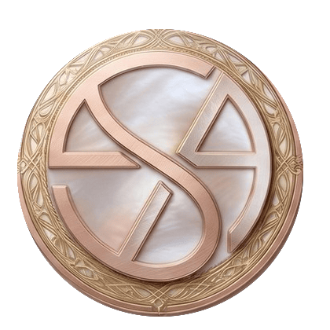
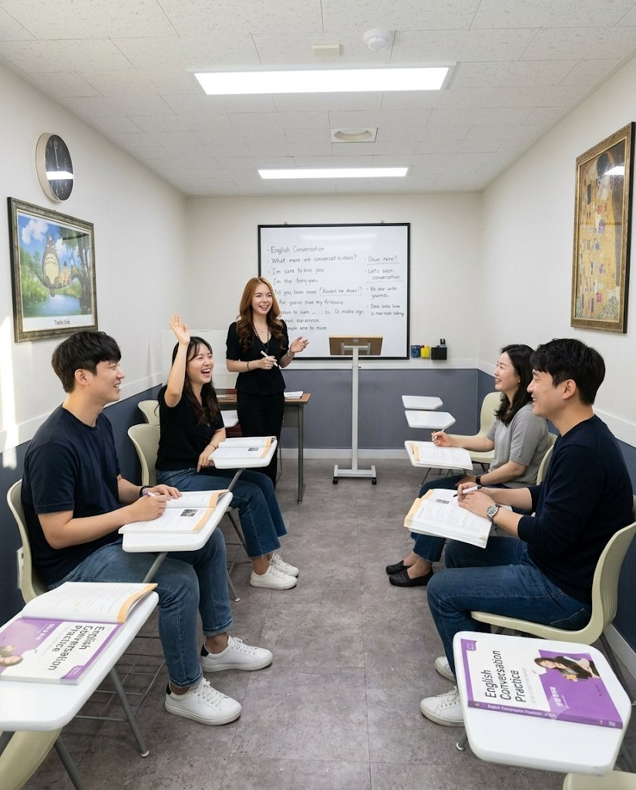
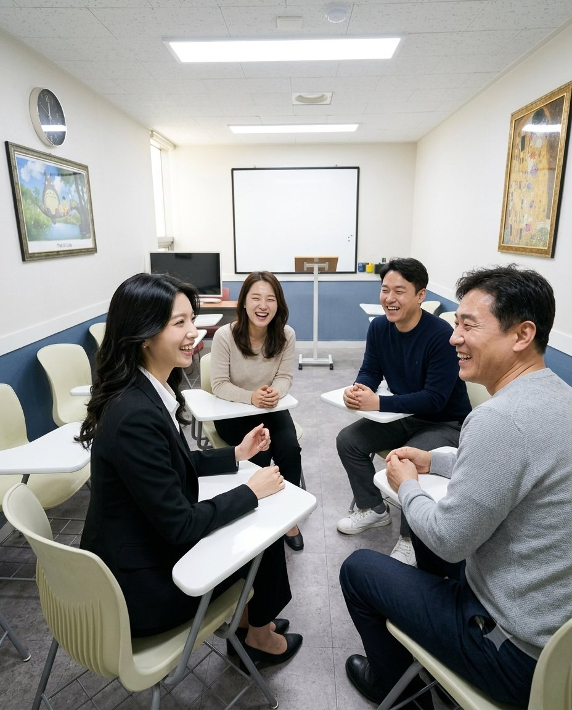
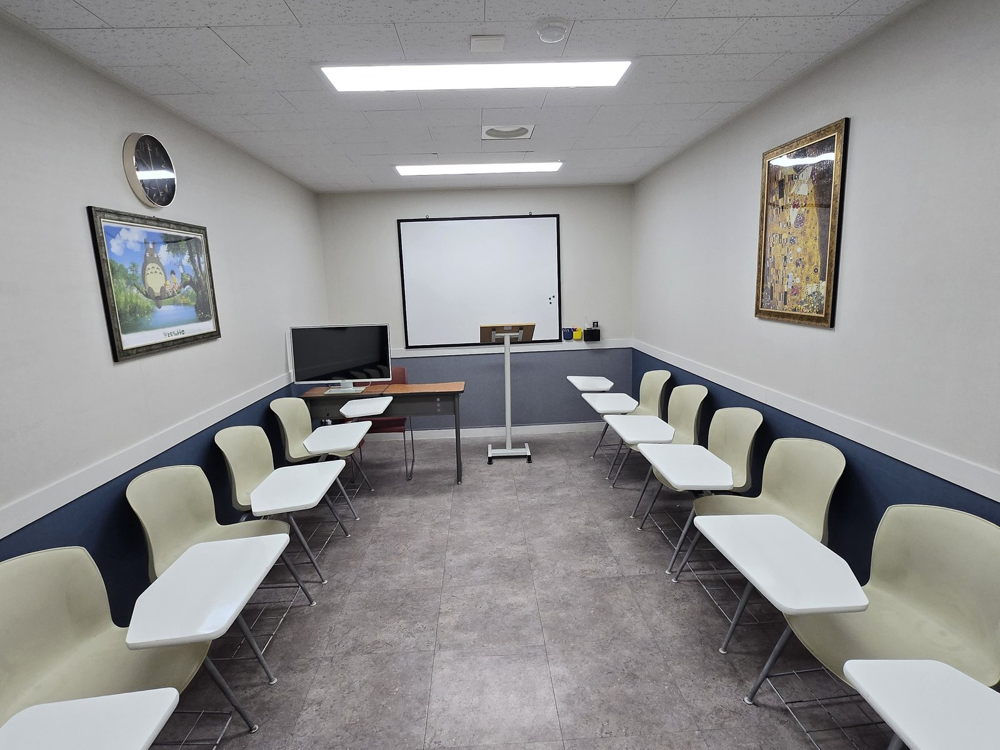
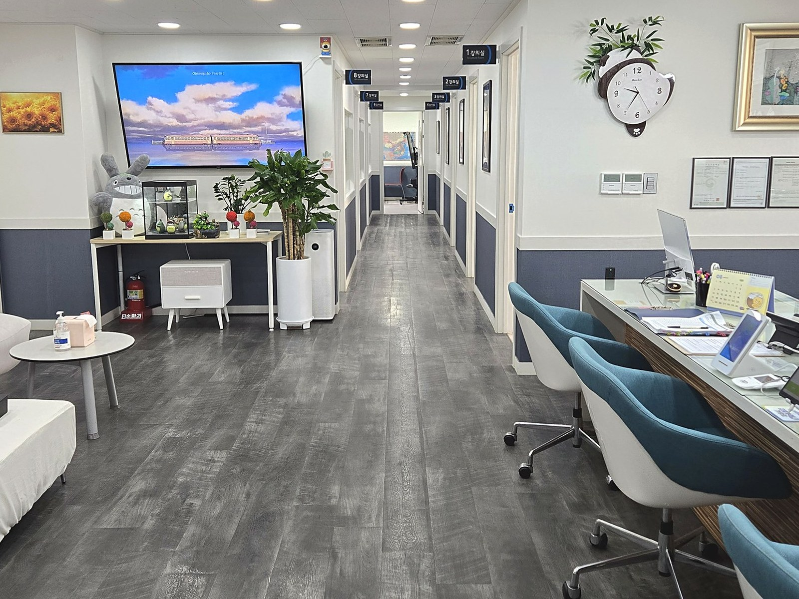
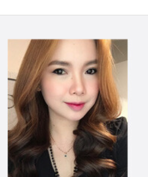
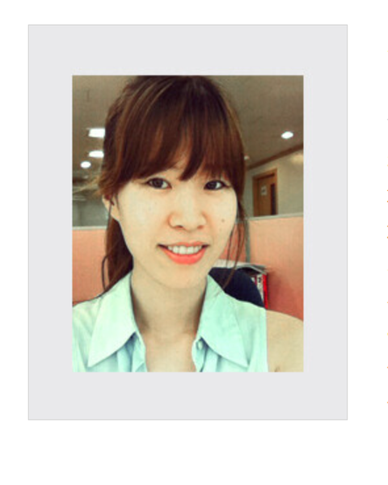
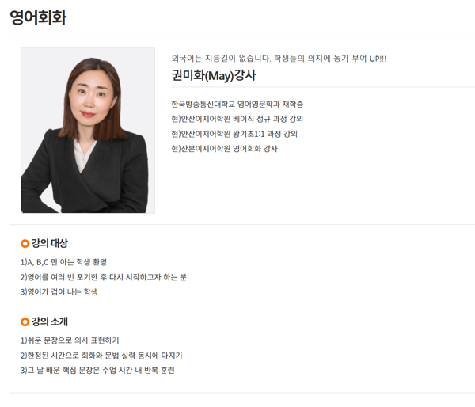
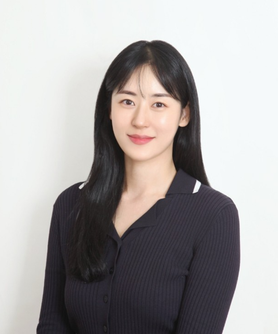
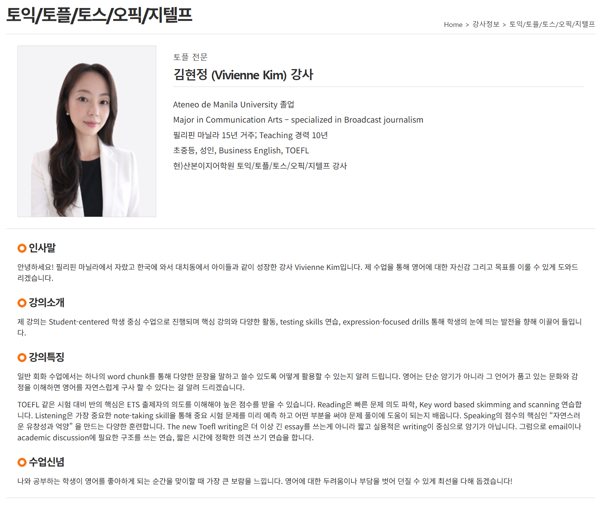

산본글로벌 영어회화 전문학원무료 상담
눈으로 읽는 영어 말고, 입에서 나오는 영어로.

말해 보고, 그 자리에서 고쳐 받는 자리. 틀려도 괜찮은 90분이에요.


레벨테스트로 시작 계단을 정하고, 한 계단씩 목표를 찍고 올라갑니다.
알파벳·발음, “I am / I like” 문장 틀부터
“Hi, I'm Minji. I like coffee.”
현재·과거 시제, 질문 만들기 — 주말·여행 이야기까지
“I went to Busan last weekend.”
접속사·시제 확장으로 문장이 길어져요
“I love Busan because the sea is so calm.”
어휘 폭·가정법으로 원어민과 일상 대화
“If I had a month off, I'd travel around Europe.”
토론·프레젠테이션, 원어민 Jerollyn 반
“I see your point, but here's why I disagree.”
처음엔 한국어로 편하게, 올라갈수록 원어민과 더 많이.

Jerollyn원어민 · STEP 2·3·4
KateBASIC · STEP 1
May 권미화STEP 1 · 저녁반
최자운STEP 2 · 정규반
Vivienne 김현정새벽반OPIc 영어는 컴퓨터 속 면접관과 40분 대화하는 말하기 시험이에요. 아래에서 위로 올라갑니다.
※ 등급 체계: OPIc 공식 시험소개(ACTFL 기준) · 성적 유효기간 2년
취업 서류의 어학 칸, 그리고 입사 후 승진·평가에 오픽 등급을 봅니다.
| 계열·직무 | 최소 등급 |
|---|---|
| 전자 계열 이공계 | IL 이상 |
| 전자 계열 경영·영업 | IM 이상 |
| 실제 경쟁력 | IH |
| 사내 | 오픽 등급 |
|---|---|
| 1등급 | AL |
| 2등급 | IM3 · IH |
| 3등급 | IM1 · IM2 |
| 4등급 | IL |
진급 준비자들이 가장 많이 목표로 하는 등급은 IH입니다.
※ 취업 커뮤니티·공개 자료로 정리한 기준입니다. 계열사·직무·연도마다 다르니 지원 공고와 사내 공지를 꼭 확인하세요.
레벨테스트로 시작 단계를 정하고, 단계가 끝날 때마다 목표 등급이 한 칸씩 올라갑니다.
※ 목표 등급은 수업 내용 기준의 안내입니다. 출석·복습량에 따라 개인차가 있고 등급을 보장하지 않습니다.
오픽 질문은 네 가지 유형이 반복돼요. 우리 수업에서 매일 하는 것과 같습니다.
처음 오신 날부터 시험 보는 날까지, 순서는 이렇게 됩니다.
시간표와 수강료는 데스크 상담에서 안내해 드립니다.
☎ 031-466-6969 무료 레벨테스트※ 수업 장면 사진은 실제 강의실과 강사 사진으로 만든 연출 이미지입니다.